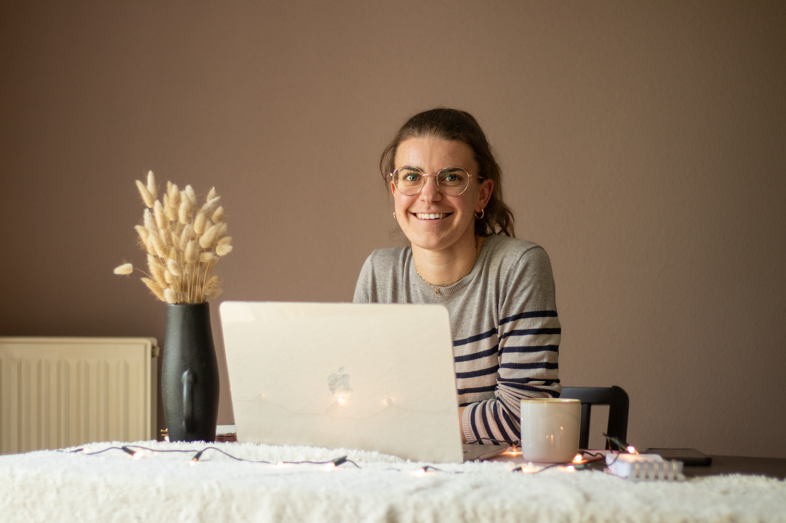

Je suis une développeuse spécialisée dans la création d'applications no-code pour les PME. Fondatrice de Brin de Code, j'accompagne les entreprises dans la digitalisation et l'optimisation de leurs processus métiers, notamment dans le secteur QSE. Mon expertise dans les outils no-code comme AppSheet me permet de concevoir des solutions sur mesure qui facilitent la gestion et l'automatisation des tâches professionnelles.
Fondatrice et développeuse Low-Code (2024 - aujourd'hui)
Coordinatrice Qualité, Sécurité, Environnement (2022 - 2024)
Apprentie QSE (2020 - 2021)
Apprentie QSE (2018 - 2020)

Randonnée

Danse sportive

Lecture
Course à pied
 LinkedIn
LinkedIn